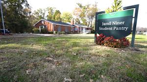

Learn more About Us Below
Who we are?
We are the Jamil Niner Student Food Pantry. We are in affiliation with UNC Charlotte to help those in need. This may be that they need food, a place to sleep, hygiene kits, and much more. We have been a staple in the community for a long time and we plan to continue to help everyone in it.
What do we do?
Here at the Jamil Niner Food Pantry we offer a variety of services (which can also be seen on our Services Page). The main we thing we is stock food for those in need and for emergencies. We offer volunteer oppurtunity for those that would like to help us to do. This can be found on our Volunteer Page.
Where are we Located?
We are lcoated right outside of UNC Charlotte campus near the North Recreation Fields. There will be a sign just on the road to identify us.
When do we Operate?
We operate Monday - Friday from 9AM - 5PM.